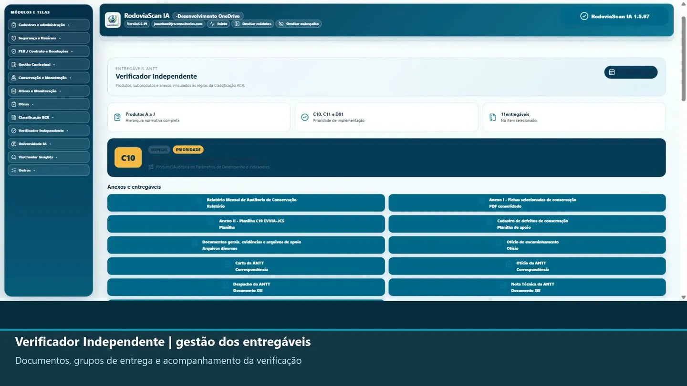
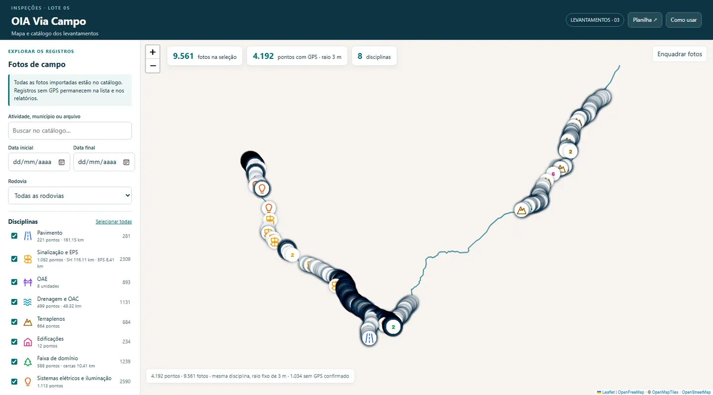
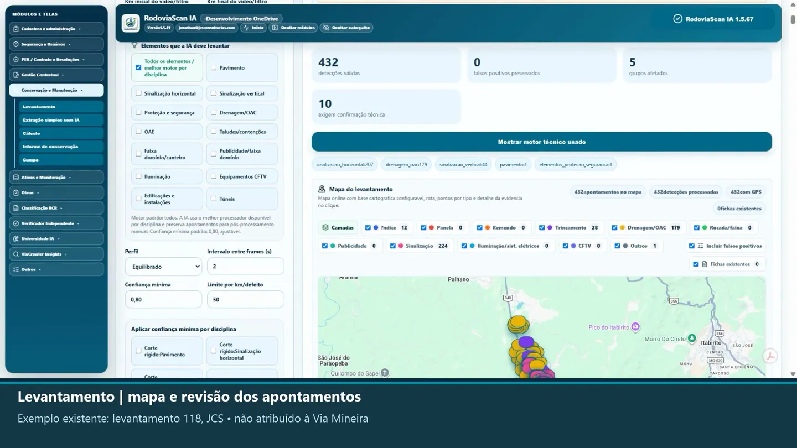
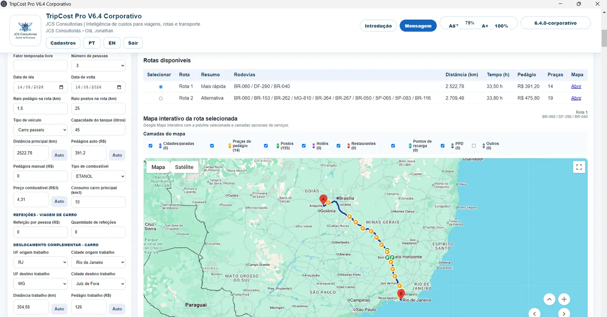
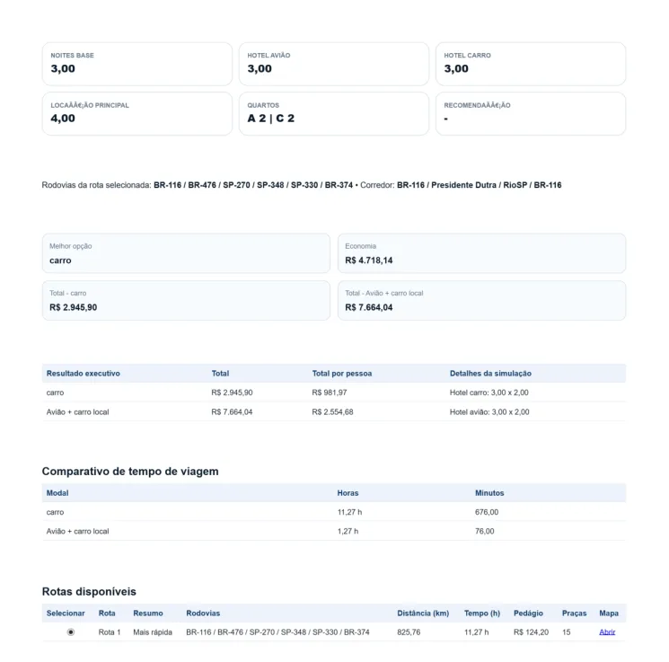
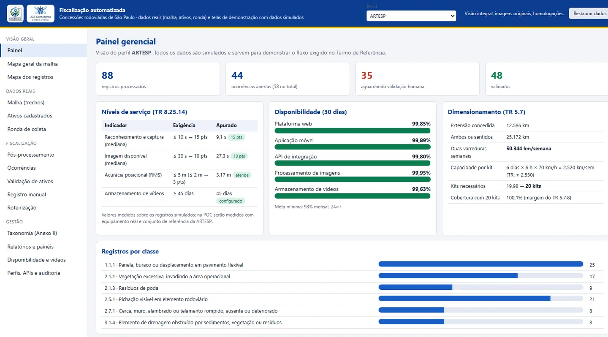
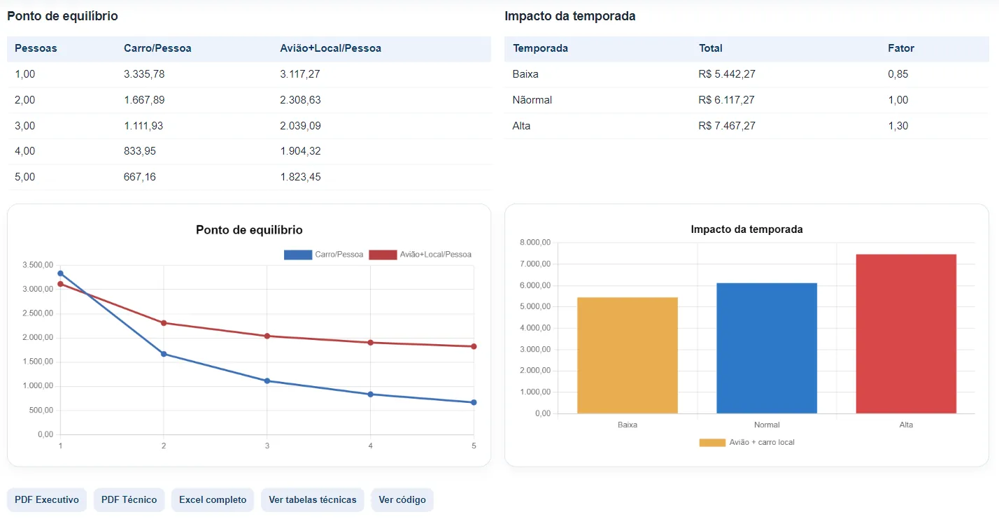

JCS Consultorias
Consultoria técnica, contratual e regulatória para concessões rodoviárias, agências e investidores — e verificação independente com o escopo integral do Termo de Referência da ANTT.
A JCS reúne consultoria técnica e regulatória, verificação independente e sistemas próprios — RodoviaScan IA e TripCost Pro — para transformar campo, contrato e dados em decisão.
Consultoria técnica, contratual e regulatória para concessões rodoviárias, agências e investidores — e verificação independente com o escopo integral do Termo de Referência da ANTT.
Software próprio, nascido da prática em concessões: inspeção rodoviária com inteligência artificial e comparação de custos de viagem e transporte.
Mais de 20 anos em infraestrutura rodoviária, em grandes grupos de concessões e em assuntos regulatórios e contratuais junto à ANTT. Atuamos do diagnóstico à entrega, com memória de cálculo e evidência em cada conclusão.
Interpretação contratual, obrigações do PER, correspondências, pleitos e interface com a agência reguladora.
Elaboração de reequilíbrios e revisões tarifárias, estruturação de pleitos e memória de cálculo auditável.
Apuração, acompanhamento e conferência dos mecanismos contratuais de desconto e de investimento.
Simulações, dados de entrada, notas, critérios e relatórios da Resolução ANTT nº 6.053/2024.
Novos negócios, planejamento estratégico, gestão de portfólio, processos e indicadores.
Bases estruturadas, planilhas inteligentes, gestão documental e painéis de decisão.
Melhoria de processos, qualidade e eficiência — a origem da JCS e o que sustenta cada produto.
Atendemos integralmente o escopo do Termo de Referência da ANTT: auditorias, parâmetros de desempenho, obras obrigatórias, evidências contratuais, ICM, governança e relatórios técnicos — com o RodoviaScan IA dando escala e rastreabilidade ao campo.


Inspeção rodoviária inteligente
Transforma vídeos, fotos, GPS, planilhas e documentos técnicos em inteligência de gestão rodoviária — com rastreabilidade entre evidência, quilômetro, ativo e obrigação contratual.

Quatro câmeras embarcadas registram o trecho com data, hora, coordenada e velocidade. O RodoviaScan IA processa o vídeo, propõe as ocorrências e entrega à equipe técnica a revisão — que permanece auditável.
O sistema não substitui a análise técnica: acelera a triagem, organiza evidências e dá escala com controle e padronização.
Levantamento noturno na BR-040/RJ com os motores JCS Pav e JCS SDR em ação.
Comparação inteligente de custos de viagem e transporte
Cotação de viagens e transporte em poucos cliques: compara modais, custos e tempo, com memória de cálculo, para apoiar decisões executivas.

Para empresas e grupos corporativos, concessionárias, transportadoras, órgãos públicos, consultorias e frotas elétricas.

Exemplo de relatório executivoMelhor opção, economia, tempo de viagem, rotas e praças de pedágio.Abrir PDF · 10 páginas · 5,8 MBCinco demonstrações navegáveis, direto no navegador. Os dados de campo, da malha e de pedágios são reais; as telas de fiscalização usam dados simulados quando indicado.
Filtre por disciplina, rodovia e data; veja quantitativos, km estimado, curvas de nível, relevo e satélite; abra cada registro no Google Maps.
Abrir em tela cheia ↗
Malha e ativos reais dos dados abertos da ARTESP; pós-processamento, ocorrências, validação, roteirização, taxonomia e relatórios.
Abrir em tela cheia ↗
Informe origem, destino, datas, pessoas e custos; o simulador compara os cenários, recomenda o modal e mostra o ponto de equilíbrio e o efeito da temporada.
Abrir em tela cheia ↗Painel público do Power BI com a base de pedágios e postos que alimenta o cálculo de rotas do TripCost Pro.
Abrir no Power BI ↗Explore os resultados das 35 concessionárias, filtre os 24 cenários e consulte os indicadores e a relação de obras.
Exemplo de demonstração. Resultados ilustrativos, sem validação oficial.
Abrir em tela cheia ↗A JCS nasceu da gestão de empresas e da prática em concessões rodoviárias: engenharia, regulação, contratos e interação com órgãos públicos. Cada sistema que desenvolvemos responde a um problema que vivemos em campo e no contrato.
Respostas rápidas sobre acesso, dados e implantação. Não encontrou a sua? Fale com a JCS.
Enviar uma perguntaO acesso é liberado por contrato, com usuário, senha, empresa e perfil definidos na implantação. Fale com a JCS para conhecer as opções de licença.
Vídeos, fotos, GPS, KMZ/KML, planilhas de cadastro e documentos técnicos como PER, contratos, manuais e normas.
Em ondas: diagnóstico, configuração da base, piloto técnico com dados reais, treinamento e evolução conforme o uso.
Não. O RodoviaScan IA acelera a triagem e organiza as evidências; a validação de cada ocorrência continua com a equipe técnica, com histórico auditável.
Fale com a JCS pelos canais de contato desta página; o suporte é feito diretamente por quem desenvolve o sistema.